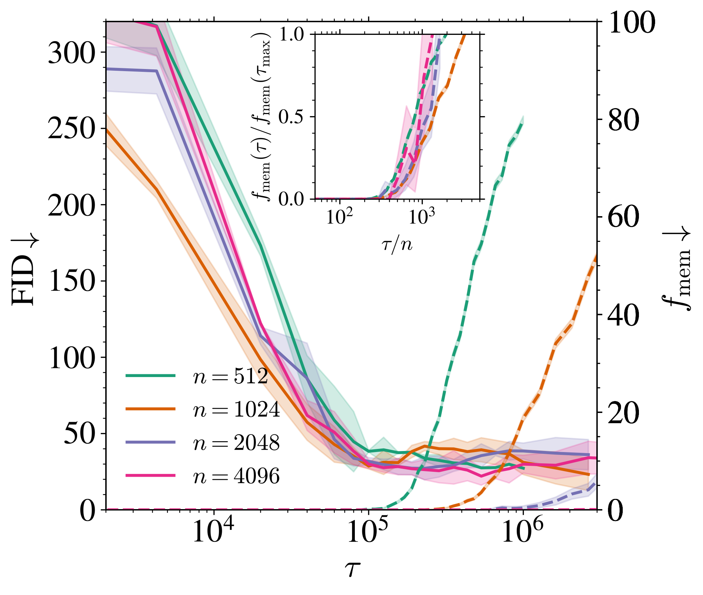
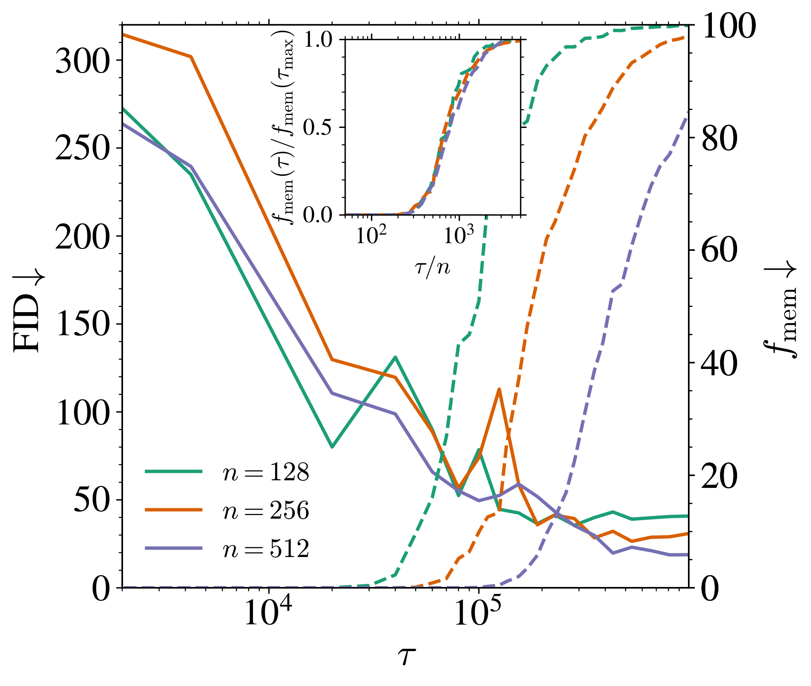
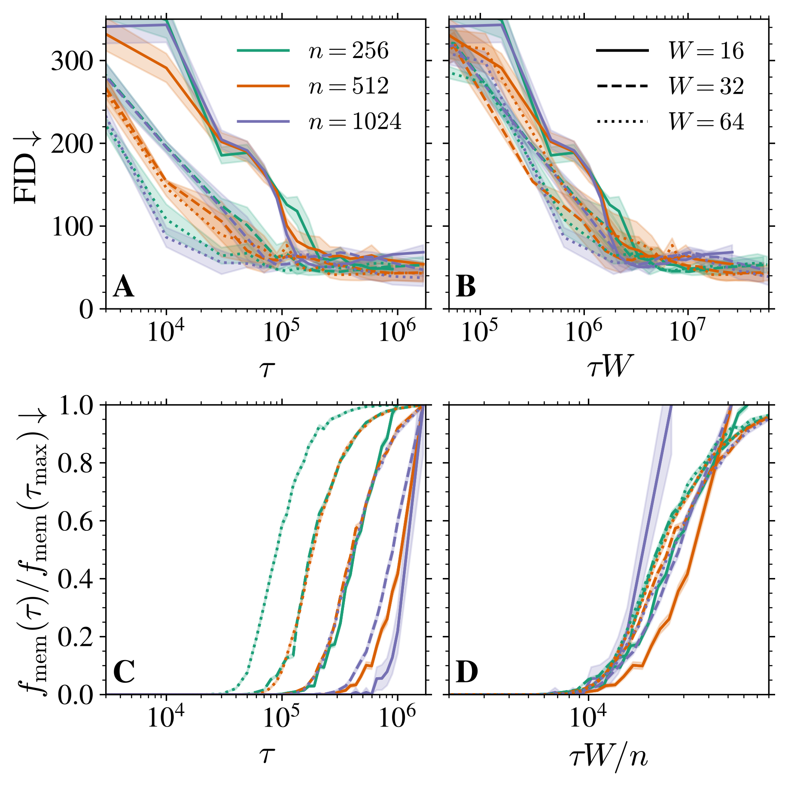
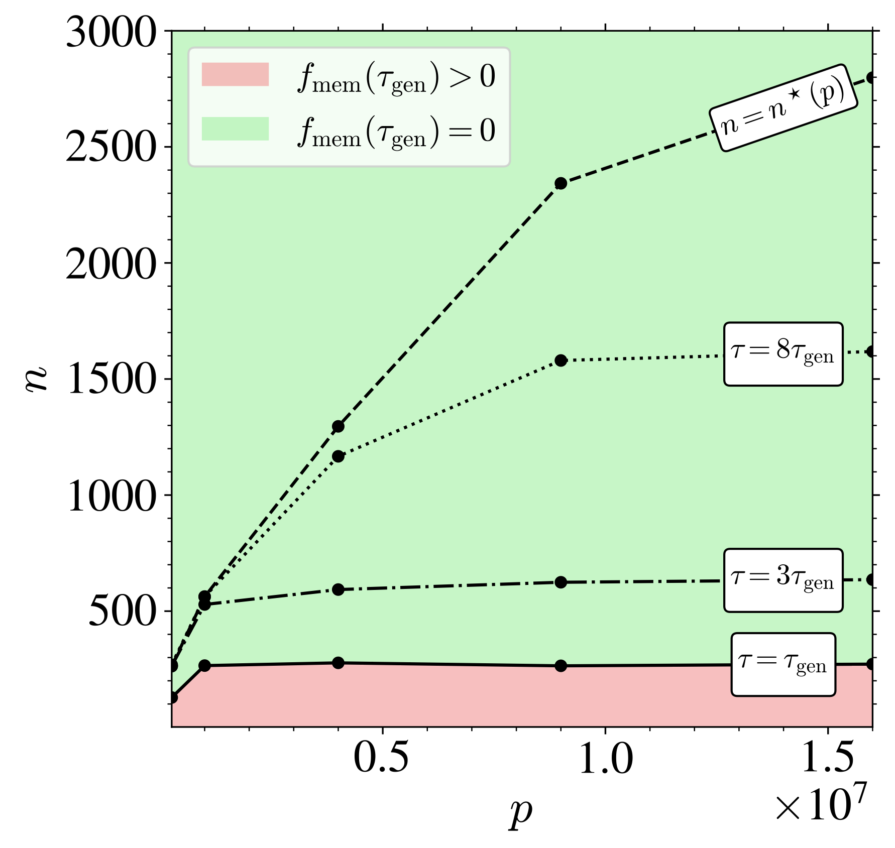
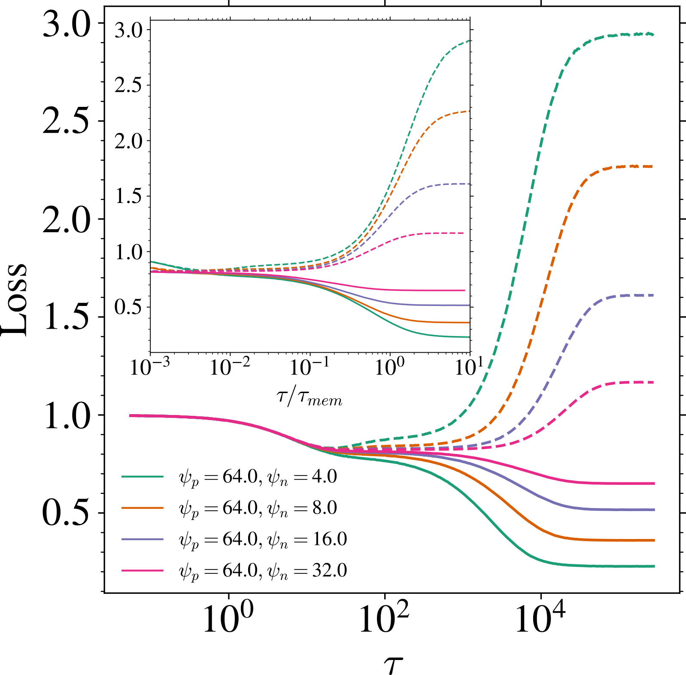
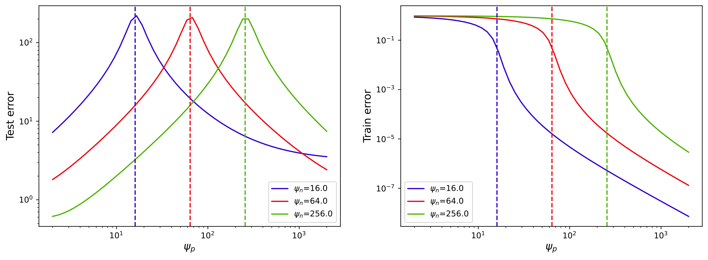

拡散モデルでの動的暗黙正則化
Bonnaire, Urfin, Biroli & Mézard (2025, NeurIPS)
Why Diffusion Models Don’t Memorize: The Role of Implicit Dynamical Regularization in Training
1/26/2026
1 はじめに
1.1. Diffusion Model とは？
1.2. 先行研究 (Biroli et al., 2024)
1.3. 本論文の要旨
A Blog Entry on Bayesian Computation by an Applied Mathematician
$$
$$
1.1 Score-based Diffusion Models
\text{Forward}\quad dX_t=-X_t\,dt+dB_t,\quad X_0\sim P_x, \text{Reverse}\quad dX'_t=-\biggr(X_t'+2s_t'(X_t')\biggl)\,dt+dB'_t.
ただし s_t'(x):=\nabla_x\log p_t'(x) は (X_t') の周辺密度 p_t' の Hyvärinen スコア．
(Tweedie’s Formula Efron, 2011) の系
\operatorname{E}\left[\frac{e^{-t}X_x-X_{s+t}}{\Delta_t}\,\middle|\,X_{s+t}=x\right]=\nabla_x\log p_{s+t}(x).
\Delta_t:=\sqrt{1-e^{-2t}} とすると \xi:=\frac{X_{s+t}-e^{-t}X_s}{\sqrt{\Delta_t}}\sim\operatorname{N}(0,1)．
s\to\infty を考えて，次の損失関数が発想される： \mathcal{L}_t(\theta;\{x^\nu\}_{\nu=1}^n)=\frac{1}{n}\sum_{\nu=1}^n\operatorname{E}_\xi\left[\|\sqrt{\Delta_t}s_\theta(x_t^\nu(\xi))+\xi\|^2\right].
1.2 Generation from the Empirical Score
Memorization Regime = 過学習 (Biroli et al., 2024)
経験リスク最小化問題
\mathcal{L}_t(\theta;\{x^\nu\}_{\nu=1}^n)=\frac{1}{n}\sum_{\nu=1}^n\operatorname{E}_\xi\left[\|\sqrt{\Delta_t}s_\theta(x_t^\nu(\xi))+\xi\|^2\right].
を解き切ったらうまくいかない．理論的には \mathbb{P}_n からのサンプルを再現してしまう．
→ 実際には経験リスク最小化を解き切っていないはず．
Early stopping により汎化を達成しているのでは？
不完全なスコア学習＋サンプリングでの数値誤差で汎化している？？？
1.3 本論文の要旨：Implicit Dynamical Regularization


- たしかに解き切っていない．汎化のためには early stopping が必須．
- n<p じゃないと implicit dynamical regularization は起きない．
- p<n のとき，訓練ダイナミクスにスケール分離が見られる
汎化が始まる時間は \tau_{\text{gen}}=O(1) だが，過学習が始まる時間は \tau_{\text{mem}}=O(n)
→ n が大きいほど early stopping の sweet spot が広い．
2 実験パート (Section 2)
理論パートではスコア学習に特化して解析するので，
\text{スコア学習での汎化}\,\approx\,\text{Generative Model としての汎化}
を確認する必要がある (2.2)．
2.1 設定
- データ：cropped, grayscaled, & downsampled CelebA, d=32^2
- スコア学習に使う NN：U-Net, 時刻 t は sinusoidal position embedding
- 損失関数：DDPM loss．ここまで全て (Ho et al., 2020) の設定に従う．
- 訓練：SGD, momentum \beta=0.95, \eta=0.01, B=n\land512
n\in\{128,\cdots,32768\}, p\in\{1/4,1,2,4,9,16\}\times10^6 を順に動かしていく
2.2 データサイズ n を変える


訓練誤差（実線），テスト誤差（点線）．全て t=0.01．
- n が増えるほど汎化ギャップ \mathcal{L}_{\text{gen}}=\mathcal{L}_{\text{test}}-\mathcal{L}_{\text{train}} が小さくなる．
- \mathcal{L}_{\text{gen}}>0 が始まって，少し遅れて f_{\text{mem}}>0 が始まる．が，スケーリングは同じ．
2.2 データサイズ n を変える

それでも同じスケーリングが見られる
→ 「モデルにサンプルを見せた回数」に依らない現象

\tau_{\text{gen}},\tau_{\text{mem}} が全体的に小さい方向へスライド
主要なスケーリングは変わらない
2.3 モデルサイズ p を変える

U-Net チャンネル数を増やす
Base channel width W
W\in\{8,16,32,48,64\}
→ p\in\{1/4,1,2,4,9,16\}\times10^6
FID が下がり始める時刻： \tau_{\text{gen}}W=O(1)
訓練データに酷似した生成が始まる時刻： \tau_{\text{mem}}W=O(n)
2.4 (p,n) 相図

Memorization Regime
n が小さすぎると，FID が下がり始める瞬間 \tau_{\text{gen}} に memorization も起こる \tau_{\text{gen}}\approx\tau_{\text{mem}}\quad \textcolor{#EEC1C0}{p\gg n}
Architectural Regularization
n>n^*(p)\approx p\qquad(n,p\to\infty) を超えると，\tau\to\infty でも memorization は起こらない．
3 理論パート (Section 3)
ランダム行列の経験スペクトル分布の極限に対するスケーリング解析
3.1 設定
- データ: \mathbb{R}^d\ni x^\nu\overset{\text{i.i.d.}}{\sim}P_x\;(\nu=1,\cdots,n). あとで d\to\infty の極限を考える．
- スコア学習に使うNN：Random Feature W\in\mathbb{R}^{p\times d} with i.i.d. Gaussian s_A(x):=\frac{A}{\sqrt{p}}\sigma^{\otimes p}\left(\frac{Wx}{\sqrt{d}}\right)\qquad A\in\mathbb{R}^{d\times p},
- 損失関数: 固定した時刻 t>0 での DSM loss \mathcal{L}_t(A;\{x^\nu\}_{\nu=1}^n):=\frac{1}{dn}\sum_{\nu=1}^n\operatorname{E}\left[\|\sqrt{\Delta_t s_A(x_t^\nu(\xi))}+\xi\|^2\right].
- 訓練: GD の連続時間極限 \dot{A}_\tau=-d^2\nabla_A\mathcal{L}_t(A_\tau)=-2\Delta_t\frac{d}{p}AU_\tau-\frac{2d\sqrt{\Delta_t}}{\sqrt{p}}V_\tau^\top,\qquad\tau\ge0.
3.2 GD の連続時間極限
DSM loss での勾配降下法： A^{(k+1)}\gets A^{(k)}-\eta\nabla_A\mathcal{L}_t(A^{(k)}),\qquad k=0,1,2,\cdots \mathcal{L}_t(A)=\frac{1}{d}\left(\frac{\Delta_t}{p}\operatorname{Tr}(A^\top AU)+\frac{2\sqrt{\Delta_t}}{\sqrt{p}}\operatorname{Tr}(AV)+d\right)
時間変換 \tau(k):=k\eta/d^2 を施して，\eta\to0 の極限を取ると \dot{A}_\tau=-d^2\nabla_A\mathcal{L}_t(A_\tau)=-2\Delta_t\frac{d}{p}A_\tau U-\frac{2d\sqrt{\Delta_t}}{\sqrt{p}}V^\top,\qquad\tau\ge0, %:=\frac{1}{n}\sum_{\nu=1}^n\E[y^\nu (y^\nu)^\top] U:=\frac{1}{n}\sum_{\nu=1}^n\operatorname{E}_\xi\left[\sigma^{\otimes p}\left(\frac{Wx^\nu_t(\xi)}{\sqrt{d}}\right)\sigma^{\otimes p}\left(\frac{Wx^\nu_t(\xi)}{\sqrt{d}}\right)^\top\right], V:=\frac{1}{n}\sum_{\nu=1}^n\operatorname{E}_\xi\left[\sigma^{\otimes p}\left(\frac{Wx^\nu_t(\xi)}{\sqrt{d}}\right)\xi^\top\right].
3.3 U のスペクトルの分布への帰着
訓練ダイナミクス (A_\tau)_{\tau\ge0} のスケール分離は，U のスペクトルの分布のスケール分離からくる． 特に，典型的な緩和時間は \Delta_tU/\psi_p の固有値の逆数が与える．
\dot{\textcolor{#E95420}{A}}_{\textcolor{#E95420}{\tau}}=-d^2\nabla_A\mathcal{L}_t(\textcolor{#E95420}{A_\tau})=-2\Delta_t\frac{d}{p}\textcolor{#E95420}{A_\tau} U-\frac{2d\sqrt{\Delta_t}}{\sqrt{p}}V^\top,\qquad\tau\ge0, は行列 A\in\mathbb{R}^{d\times p} に関する線型 ODE．U\in\mathrm{GL}_p(\mathbb{R}) なら Duhamel の公式から \frac{\textcolor{#E95420}{A_\tau}}{\sqrt{p}}=-\frac{1}{\sqrt{\Delta_t}}V^\top U^{-1}+\left(\frac{1}{\sqrt{\Delta_t}}V^\top U^{-1}+\frac{A_0}{\sqrt{p}}\right)\exp\left(-\frac{2\Delta_t}{\psi_p}U\textcolor{#E95420}{\tau}\right), \psi_p:=\frac{p}{d},\qquad\psi_n:=\frac{n}{d}.
3.4 Stieltjes Transform Method (1/2)
U の経験スペクトル分布 \mu_U の Stieltjes transform は，resolvent R(z):=(U-zI_p)^{-1} の平均固有値が与える： q(z):=\frac{\operatorname{Tr}(R(z))}{p}=\frac{1}{p}\sum_{i=1}^pR(z)_{ii}=\int_{-\infty}^\infty\frac{1}{\lambda-z}\mu_U(d\lambda)\quad(z\in\mathbb{C}\setminus\mathbb{R}).
(IX.2.2 The Spectral Theorem Conway, 2007)
U を Hilbert 空間 H 上の正規作用素とする．このとき，ただ一つのスペクトル測度 E:\mathrm{Sp}(U)\to B(H) が存在して， U=\int_{\mathrm{Sp}(U)} \lambda E(d\lambda).
3.4 Stieltjes Transform Method (1/2)
U の経験スペクトル分布 \mu_U の Stieltjes transform は，resolvent R(z):=(U-zI_p)^{-1} の平均固有値が与える： q(z):=\frac{\operatorname{Tr}(R(z))}{p}=\frac{1}{p}\sum_{i=1}^pR(z)_{ii}=\int_{-\infty}^\infty\frac{1}{\lambda-z}\mu_U(d\lambda)\quad(z\in\mathbb{C}\setminus\mathbb{R}).
Resolvent R(z) は f(\lambda)=(z-\lambda)^{-1} の E に関する積分： R(z)=\frac{1}{U-z}=\int_{\mathrm{Sp}(U)}\frac{1}{\lambda-z}E(d\lambda). \therefore\qquad R(z)_{ii}=(e_i|R(z)e_i)=\int_{-\infty}^\infty\frac{1}{\lambda-z}\mu_{e_i}(d\lambda). \mu_U=\frac{1}{p}\sum_{i=1}^p\mu_{e_i},\qquad \mu_{e_i}(A):=(e_i|E(A)e_i)\quad(A\in \mathcal{B}(\mathbb{R})).
3.5 Stieltjes Transform Method (2/2)
q(z)=\operatorname{Tr}(R(z))/p を求めれば，\mu_U が復元できる：
(定理2.4.3 Anderson et al., 2011)
\mu を \mathbb{R} 上の確率測度， S_\mu(z):=\int_{-\infty}^\infty\frac{\mu(dx)}{x-z},\qquad z\in\mathbb{C}\setminus\mathbb{R} をStieltjes transform とする．任意の開区間 I\subset\mathbb{R} について，\mu が \partial I 上に atom を持たないならば \mu(I)=\lim_{\epsilon\to0}\int_I\frac{\mathrm{Im}\,S_\mu(\lambda+i\epsilon)}{\pi}\,d\lambda.
3.5 Stieltjes Transform Method (2/2)
【証明】 任意の \lambda\in\mathbb{R} について，
\begin{align*} \mathrm{Im}\,\left(\frac{S_\mu(\lambda+i\epsilon)}{\pi}\right)&=\frac{S_\mu(\lambda+i\epsilon)-S_\mu(\lambda-i\epsilon)}{2\pi i}\\ &=\frac{1}{2\pi i}\int_\mathbb{R}\left(\frac{1}{x-(\lambda+i\epsilon)}-\frac{1}{x-(\lambda-i\epsilon)}\right)\,\mu(dx)\\ &=\frac{1}{2\pi i}\int_\mathbb{R}\frac{2i\epsilon}{x^2-2\lambda x+(\lambda^2+\epsilon^2)}\mu(dx)\\ &=\int_\mathbb{R}\frac{1}{\pi}\frac{\epsilon}{(x-\lambda)^2+\epsilon^2}\mu(dx),\qquad\lambda\in\mathbb{R}. \end{align*}
この右辺は実は X\sim\mu,C_\epsilon\sim\operatorname{Cauchy}(0,\epsilon) について X+C_\epsilon の分布の \lambda での確率密度である．X+C_\epsilon\Rightarrow X から結論が従う．
3.6 主定理：平均レゾルベント q(z) の極限の特徴付け
q を記述するための補助的な量（R(z) と W,\Sigma^{-1}W との overlap）を導入：
\scriptstyle r(z):=\frac{1}{p}\operatorname{Tr}(\Sigma^{1/2}W^\top(U-zI_p)^{-1}W\Sigma^{1/2}),\quad s(z):=\frac{1}{p}\operatorname{Tr}(W^\top(U-zI_p)^{-1}W),\quad z\in\mathbb{C}
(定理3.1 Bonnaire et al., 2025)
q(z)=\operatorname{Tr}(R(z))/p はランダム行列極限 d,p,n\to\infty で大数の法則が性質するとする．このとき，後述の仮定の下で，q は次の鞍点方程式の解が与える：
\begin{align*} \scriptstyle \widehat{s}(q)&\scriptstyle=b^2_t\psi_p+\frac{1}{q},\quad\hat{r}(r,q)=\frac{\psi_pa_t^2e^{-2t}}{1+\frac{a_t^2e^{-2t}\psi_p}{\psi_n}r+\frac{\psi_pv_t^2}{\psi_n}q},\quad s(z)=\int\frac{1}{\hat{s}(q)+\lambda\hat{r}(r,q)}\rho_\Sigma(d\lambda),\\ \scriptstyle r(z)&\scriptstyle=\int\frac{\lambda}{\hat{s}(q)+\lambda\hat{r}(r,q)}\,\rho_\Sigma(d\lambda),\quad\psi_p(s_t^2-z)+\frac{\psi_pv_t^2}{\scriptscriptstyle 1+\frac{a_t^2e^{-2t}\psi_p}{\psi_n}r+\frac{\psi_pv_t^2}{\psi_n}q}+\frac{1-\psi_p}{q}-\frac{s}{q^2}=0. \end{align*}
3.7 Gaussian Equivalence Principle
経験スペクトル極限の構造定理 (定理1.4 Péché, 2019)
ランダム行列 X\in\mathbb{R}^{d\times n},W\in\mathbb{R}^{p\times d} の成分はそれぞれ i.i.d. で，指数より軽い裾を持ち，(0,1) に正規化されているとする． f:\mathbb{R}\to\mathbb{R} が Schwartz 急減少関数ならば， 次の２つの行列 M,M' の経験スペクトル分布は漸近同等： M:=\frac{1}{d}f^{\otimes(p\times n)}\left(\frac{WX}{\sqrt{d}}\right)f^{\otimes(p\times n)}\left(\frac{WX}{\sqrt{d}}\right)^\top \scriptstyle M':=\frac{1}{n}\left(\sqrt{\theta_2(f)}\frac{WX}{\sqrt{d}}+\sqrt{\theta_1(f)-\theta_2(f)}Z\right)\left(\sqrt{\theta_2(f)}\frac{WX}{\sqrt{d}}+\sqrt{\theta_1(f)-\theta_2(f)}Z\right)^\top ただし，Z\in\mathbb{R}^{p\times n} は Gaussian random matrix で， \theta_1(f)=\operatorname{E}[f(Z_{11})^2],\quad\theta_2(f)=\operatorname{E}[f'(Z_{11})]^2=\operatorname{E}[Z_{11}f(Z_{11})]^2.
3.7 Gaussian Equivalence Principle
(補題C.1 Bonnaire et al., 2025)
- \sigma\in L^2_0(\gamma),\;\gamma:=N_1(0,1) である．
- データ分布 P_x は sub-Gaussian．
- P_x の共分散行列 \Sigma^d:=\operatorname{E}[XX^\top] は d\to\infty の極限で有界な固有値を持ち，経験スペクトル分布の極限は密度 \rho_\Sigma を持つ絶対連続分布になる．
上の３条件の下で，次の２つの行列 U,U' の経験スペクトル分布は漸近同等：
\begin{align*} \scriptstyle U&\scriptstyle:=\frac{1}{n}\sum_{\nu=1}^n\operatorname{E}_\xi\left[\sigma^{\otimes p}\left(\frac{Wx^\nu_t(\xi)}{\sqrt{d}}\right)\sigma^{\otimes p}\left(\frac{Wx^\nu_t(\xi)}{\sqrt{d}}\right)^\top\right]\\ \scriptstyle U'&\scriptstyle:=\frac{GG^\top}{n}+b_t^2\frac{WW^\top}{d}+s_t^2I_p,\qquad G:=e^{-t}a_t\frac{W}{\sqrt{d}}X'+v_t\Omega \end{align*}
X' は X の独立 copy，\Omega は独立な Gaussian random matrix．
3.7 Gaussian Equivalence Principle
\begin{align*} U&:=\frac{1}{n}\sum_{\nu=1}^n\operatorname{E}_\xi\left[\sigma^{\otimes p}\left(\frac{Wx^\nu_t(\xi)}{\sqrt{d}}\right)\sigma^{\otimes p}\left(\frac{Wx^\nu_t(\xi)}{\sqrt{d}}\right)^\top\right]\\ U'&:=\frac{GG^\top}{n}+b_t^2\frac{WW^\top}{d}+s_t^2I_p,\qquad G:=e^{-t}a_t\frac{W}{\sqrt{d}}X'+v_t\Omega \end{align*}
\sigma^2_x:=\operatorname{Tr}(\Sigma)/d,\;f_t(\xi,\eta):=\sigma(e^{-t}\sigma_x\eta+\sqrt{\Delta_t}\xi)\;\xi,\eta,\zeta\sim\operatorname{N}_1(0,1) とすると \begin{align*} b_t&:=\operatorname{E}[\xi f_t(\xi,\eta)],\qquad a_t:=\operatorname{E}\left[\frac{\eta}{e^{-t}\sigma_x} f_t(\xi,\eta)\right],\\ v_t^2&:=\operatorname{E}[f_t(\xi,\eta)f_t(\xi,\zeta)]-a_t^2e^{-2t}\sigma^2_x,\\ s^2_t&:=\operatorname{E}[\sigma(\Gamma_t\eta)^2]-a_t^2e^{-2t}\sigma^2_x-v_t^2-b_t^2,\qquad\Gamma_t:=e^{-2t}\sigma^2_x+\Delta_t. \end{align*}
3.8 q(z)=\operatorname{Tr}(R(z))/p の極限の計算
Replica Trick (Bonnaire et al., 2025)
\frac{d\det(X)}{dX}\scriptstyle=\operatorname{Tr}(X^{-1})\det(X) より，1 \begin{align*} q(z)%&=-\frac{1}{p}\pp{}{z}\log\det(U-zI_p)\\ &=\frac{2}{p}\frac{\partial }{\partial z}\log\left(\det(U-zI_p)\right)^{-\frac{1}{2}}\\ &=2\frac{\partial }{\partial z}\lim_{p\to\infty}\frac{\operatorname{E}[\log Z(z)]}{p}\\ Z(z)&:=\frac{1}{(2\pi)^{\frac{p}{2}}}\int_{\mathbb{R}^p}e^{-\frac{\phi^\top(U-zI_p)\phi}{2}}\,d\phi \end{align*} 次の関係を用いて計算する： \log Z=\lim_{n\to\infty}\frac{Z^n-1}{n}.
Linearization (George et al., 2025)
U=FF^\top/n と表せたとき， \begin{align*} L(z)&:=\begin{pmatrix} -z_pI&F^\top/\sqrt{n}\\ F/\sqrt{n}&I_n \end{pmatrix}\\ &\scriptstyle=B_0\otimes I+E_{12}\otimes X+E_{21}\otimes X^* \end{align*} という大きい行列 L(z)^{-1} の一部 (L(z)^{-1})_{11}=-(U+zI_p)^{-1} に R(z) が入る．この直線束 (linear pencil) 表現の \operatorname{Tr}(L(z)^{-1}) の計算が自由確率論 (free CLT) で出来る．
3.9 主な系：スペクトルの two-bulk 構造
(定理3.2 Bonnaire et al., 2025)
U のランダム行列極限での極限固有値分布 \rho は次の表示を持つ：1
- 過剰パラメータ領域：\psi_p>\psi_n\gg1 のとき
\rho(\lambda)=\left(1-\frac{1+\psi_n}{\psi_p}\right)\delta_{\{s_t^2\}}(\lambda)+\frac{\psi_n}{\psi_p}\rho_1(\lambda)+\frac{1}{\psi_p}\mu_{\widetilde{U}}(\lambda).
- 不足パラメータ領域：\psi_n>\psi_p\gg1 のとき
\rho(\lambda)=\left(1-\frac{1}{\psi_p}\right)\rho_1(\lambda)+\frac{1}{\psi_p}\mu_{\widetilde{U}}(\lambda).
ただし，\rho_1 とは……（続く）
証明は \psi_n,\psi_p\to\infty の近似の下で固定点方程式を解くことによる．
3.9 主な系：スペクトルの two-bulk 構造
過剰パラメータ領域：\psi_p>\psi_n\gg1 のとき
\rho(\lambda)=\left(1-\frac{1+\psi_n}{\psi_p}\right)\delta_{\{s_t^2\}}(\lambda)+\frac{\psi_n}{\psi_p}\rho_1(\lambda)+\frac{1}{\psi_p}\mu_{\widetilde{U}}(\lambda).
- s_t^2 に属する固有ベクトルは \mathrm{Ker}\;(A_\tau) に入り，訓練／テスト誤差の値を変えない．
- \rho_1 は atom を持たず， \mathrm{supp}\;(\rho_1)=\left[s_t^2+v_t^2\left(1-\sqrt{\psi_p/\psi_n}\right)^2,s_t^2+v_t^2\left(1+\sqrt{\psi_p/\psi_n}\right)^2\right]
- \mu_{\widetilde{U}} は atom を持つかもしれないが，絶対連続部分は \inf\mathrm{supp}\;(\mu_{\widetilde{U}})=O(\psi_p)\qquad(\psi_n,\psi_p\to\infty).
特に，\psi_p/\psi_n\to\infty も仮定すると，\sup\mathrm{supp}\;(\rho_1)=O(\psi_p/\psi_n)．
3.9 主な系：スペクトルの two-bulk 構造
過剰パラメータ領域：\psi_n,\psi_p/\psi_n\to\infty のとき
\rho(\lambda)=\left(1-\frac{1+\psi_n}{\psi_p}\right)\delta_{\{s_t^2\}}(\lambda)+\frac{\psi_n}{\psi_p}\rho_1(\lambda)+\frac{1}{\psi_p}\mu_{\widetilde{U}}(\lambda). \sup\mathrm{supp}\;(\textcolor{#928EC3}{\rho_1})=O(\psi_p/\psi_n),\qquad\inf\mathrm{supp}\;(\textcolor{#E69252}{\mu_{\widetilde{U}}})=O(\psi_p/\psi_n\cdot\psi_n).


\rho_1 は \sigma^2_x:=\operatorname{Tr}(\Sigma)/d を通じてしかデータに依存しないので，２つの図で変わらない．
3.10 過剰パラメータ領域での訓練ダイナミクス
\tau_{\text{gen}}:=\frac{\psi_p}{\Delta_t}\inf\mathrm{supp}\;(\textcolor{#E69252}{\mu_{\widetilde{U}}})=O(1/\Delta_t). \tau_{\text{mem}}:=\frac{\psi_p}{\Delta_t}\inf\mathrm{supp}\;(\textcolor{#928EC3}{\rho_1})=O(\psi_n/\Delta_t). t>0 が大きく，n が大きいほど \tau_{\text{mem}} が大きい．

\mathcal{E}_{\text{score}}:=\frac{1}{d}\operatorname{E}_x\biggl[\|s_A(x)-\nabla\log P_x\|^2\biggr]

\tau_{\text{gen}} までの速いスケールでは，汎化ギャプ \mathcal{L}_{\text{gen}}=\mathcal{L}_{\text{test}}-\mathcal{L}_{\text{train}} が消える．
3.11 補足：経験誤差最小化解 \tau\to\infty の汎化誤差
実は収束先も n が大きいほど汎化ギャップ \mathcal{L}_{\text{gen}}=\mathcal{L}_{\text{test}}-\mathcal{L}_{\text{train}} は低くなる (George et al., 2025)．
ただし，パラメータ不足領域 \psi_p<\psi_n に侵入した場合は，時間スケールの分離は見られず，architectural regularization により \mathcal{L}_{\text{gen}}=\mathcal{L}_{\text{test}}-\mathcal{L}_{\text{train}} はさらに下がる．
t=0.01．縦の点線は \psi_n=\psi_p (Figure 5 George et al., 2025)．\tau\to\infty の場合に対応．
4 まとめ
4.1 学習ダイナミクスのスケール分離
- 学習ダイナミクスのスケール分離を，勾配流の緩和時間 \tau^{-1}=\psi_p\lambda_{\text{min}}/\Delta_t の解析から示した．
- U の固有値分布 \rho(d\lambda) が次を満たす d\to\infty 極限でスケール分離する： \psi_p:=\frac{p}{d}\to\infty,\quad\psi_n:=\frac{n}{d}\to\infty,\quad\frac{\psi_p}{\psi_n}\to\infty.
- 速いスケールは真のデータ分布のみに依存し，\mathcal{L}_{\text{gen}}=\mathcal{L}_{\text{test}}-\mathcal{L}_{\text{train}} が消える
- 遅いスケールは \tau_{\text{mem}}=O(n) のオーダーで，データ分布の \sigma_x^2:=\operatorname{Tr}(\Sigma)/d のみに依存する．
- n も同時に大きくしていくと，経験リスク最小解 \tau\to\infty での \mathcal{L}_{\text{gen}} は下がる
4.2 なぜ学習ダイナミクスにスケール分離が見られるのか？
なぜスケール分離が起こるのか？
\tau_{\text{mem}}=O(n) というのは，NN が経験スコアの高周波成分を学習するのにかかる時間が O(n) でスケールするのが見えている？
- NN の spectral bias (Rahaman et al., 2019)：NN が関数を学習する際，低周波成分 → 高周波成分の順に学んでいく
- → early stopping と併せると「低周波成分だけを学んでいることが汎化の主な理由である」という仮説がたつ．
- 拡散モデルは訓練データに依らず，高周波成分を縮小して学習する (Kadkhodaie et al., 2024)1
4.3 附言
- GD ダイナミクスだけ？ SGD, Adam でも普遍的に観察されるし，説明したい．
- conditional generation でも成り立つように思われ，その場合 n,p,d 以外の変数が出てくる？
- P_x の裾が重い場合はどうなる？部分多様体上に台を持つ場合は？